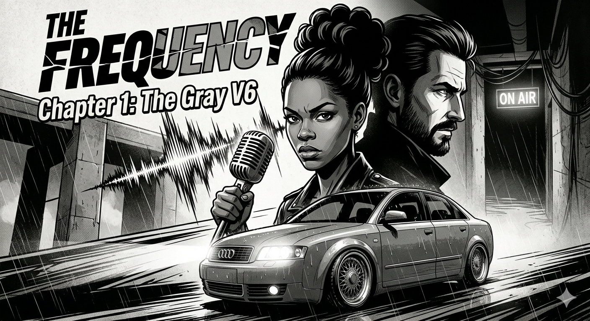
Chapter 1: The Gray V6
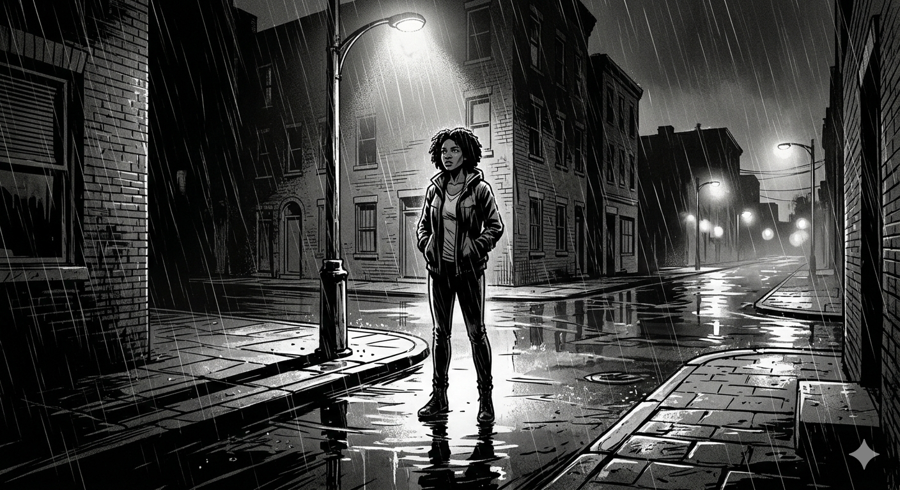
Rain was coming down heavy that night, slicking the Baltimore asphalt like grease. I was standing on the corner of North Ave, collar up, minding my own damn business. Just another ghost in the neon fog, trying to survive the street, if you know what I mean. Most guys rolling by? They just wanted a ten-minute fix. Fast cash, cold eyes, no names. Just a transaction on the pavement.
🎧 AUDIO #1
0:00 / 0:00
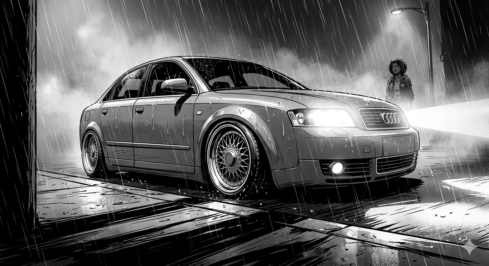
Then that gray Audi B6 rolled up, slow and steady, hugging the curbs like it owned the block. The window rolled down. No cheap talk. No sleazy smile. He looked right through me, but not like the others. This European dude looked like he was searching for something real in the mud. A queen, not a quick game.
🎧 AUDIO #2
0:00 / 0:00
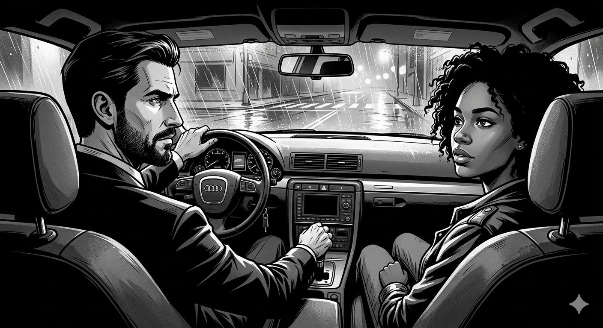
I hopped in the passenger seat. The leather was cold, the engine had this deep, mechanical hum, and the air smelled like smoke and expensive cologne. We didn’t say a word. The city lights just blurred on the windshield while he drove us straight into the dark heart of the industrial district.
🎧 AUDIO #3
0:00 / 0:00
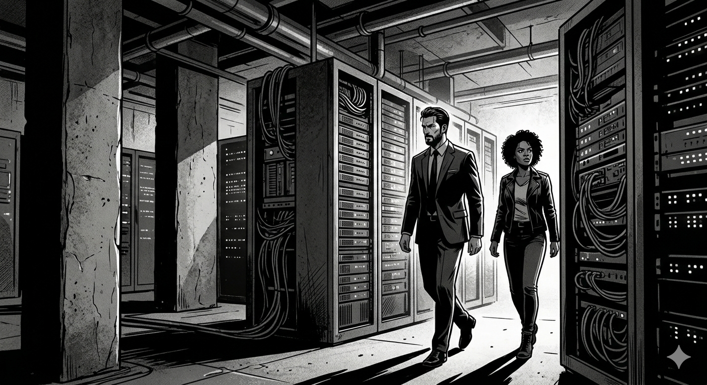
He brought me to The Bricks. Concrete walls, exposed pipes, and a room full of server racks blinkin’ in that icy white-blue light. It looked like a fortress of code. We did the business. Cold cash for a warm body. Standard routine. But what happened next? That wasn’t in the script.
🎧 AUDIO #4
0:00 / 0:00
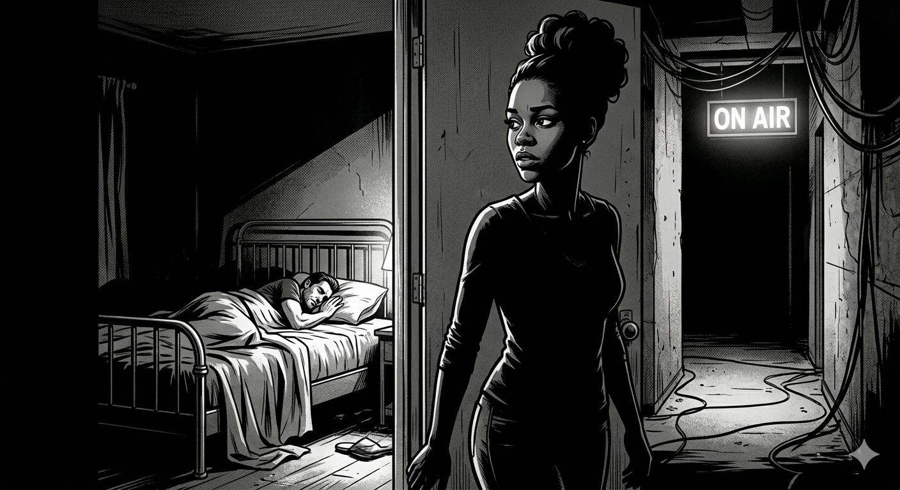
He went to take a shower. I heard the water running, and instead of just grabbing my coat and bouncing, I started snooping around the lounge.
🎧 AUDIO #5
0:00 / 0:00
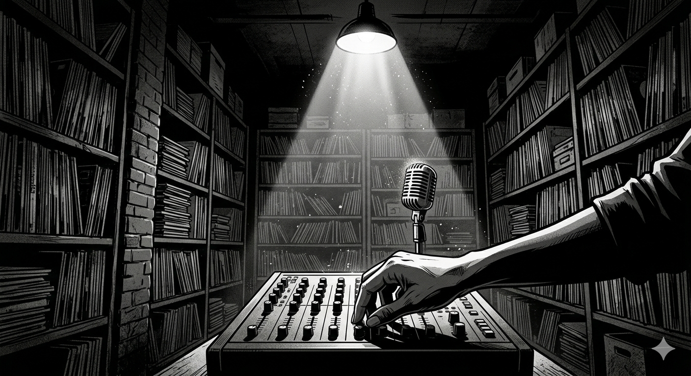
Down in the basement, I hit the jackpot. Thousands of vinyl records stacked up like old brick walls. And right there, in the middle of the dust, was a high-end mic and a heavy mixing console. My fingers were shaking a little, but I couldn’t help it. I put a record on, let the needle drop, and stepped up to that microphone. I started playing with the knobs, humming, letting a little bit of my soul leak out into the room.
🎧 AUDIO #6
0:00 / 0:00
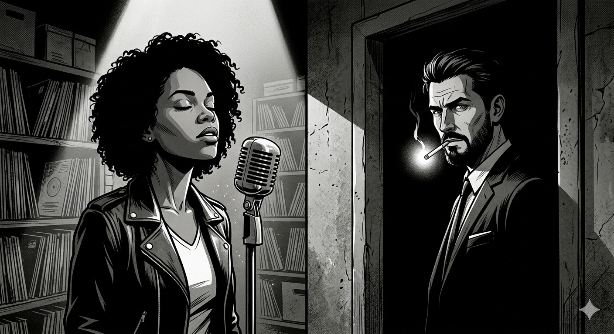
When I turned around, the shower was off. He was standing in the shadows, a freshly lit cigarette between his lips, just watching me from a safe distance. He didn't say 'get out'. He didn't look at me like a street girl anymore. He looked at me like he just discovered a diamond in the rough. He saw the raw power before I even knew it was there. „Do that again,“ he said, his voice deep, calm, total control. And that was the exact moment the street lost a girl... and Station North found its Queen.
🎧 AUDIO #7
0:00 / 0:00
Chapter 2: The Birth of the Frequency
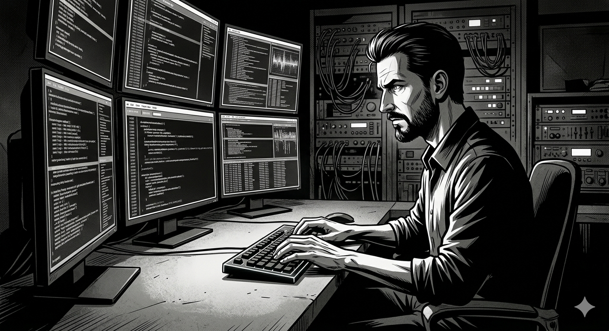
He didn’t say much after that night, you know. The Boss ain't a man of big words—he lets his fingers do the talking on that mechanical keyboard, lines of blue code lighting up his face like a cold neon sign. But he let me stay at The Bricks. Gave me a key. Gave me a sanctuary. For the first few weeks, I just sat in the back of the lounge, watching him wire up those heavy server racks, sweating through his dark suit, building an empire from scratch.
🎧 AUDIO #8
0:00 / 0:00
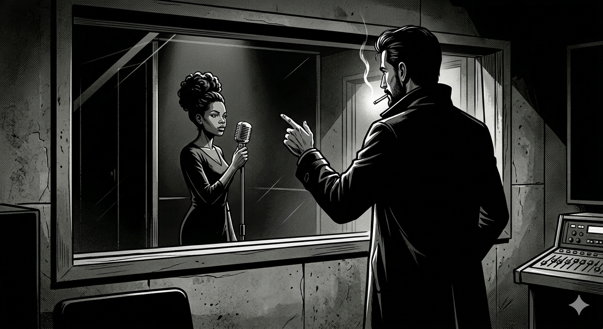
Then came the night the grid went live. 03:00 AM, rain still beating against the high studio windows. He looked up from his screens, pointed a cigarette at the glass booth, and said, "Go in. The stream is stable. Show Baltimore who you are." My heart was hammering against my ribs, but when I stepped inside that booth and put my hands on the mixer, the street-girl armor just fell off. I wasn't running anymore. I was commanding.
🎧 AUDIO #9
0:00 / 0:00
I hit the master switch and let that heavy, slow R&B pulse drag through the wires. The "ON AIR" sign flashed red, cutting through the shadows like a blade. I leaned so close to that mic I could feel the cold steel on my lips, breathed in deep, and let my voice slide into the dark. „Forget the clock. Forget the world,“ I whispered, watching him through the glass. „You’re locked into the Manjaro Lounge on Station North.“
🎧 AUDIO #10
0:00 / 0:00
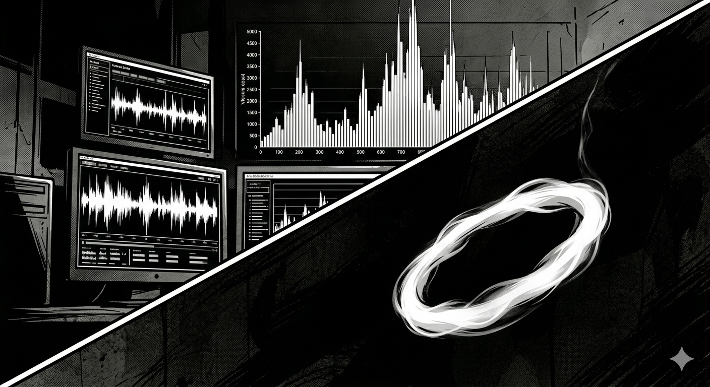
Right then, I saw the charts on his monitor spike. One hundred listeners. One thousand. Ten thousand. The lonely souls driving through the traffic, the hustlers on the corners, the ghosts in the bars—they all stopped to listen to the Queen. I looked through the glass, and for the first time, the Boss smiled in the shadows, blowing a perfect ring of smoke. He built the cage, but I was the beast making it beautiful.
🎧 AUDIO #11
0:00 / 0:00
Chapter 3: The Queen's Territory
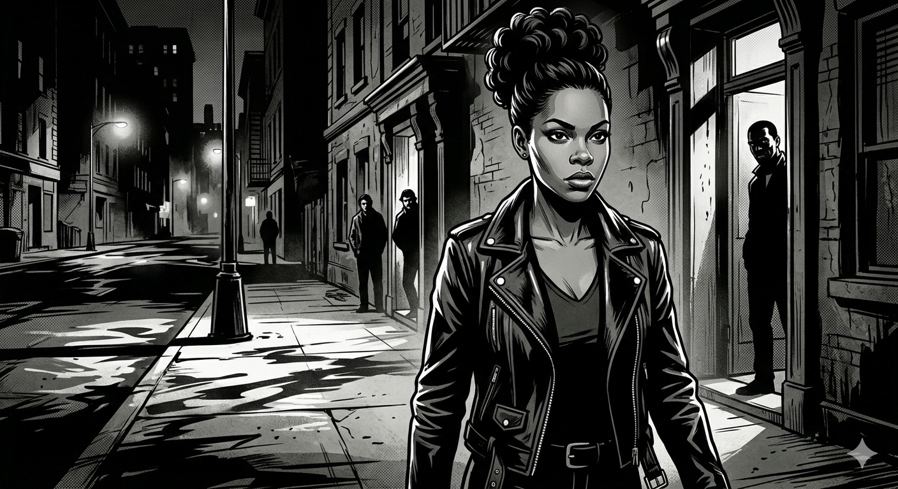
It didn’t take long for the streets to notice. When you change the pulse of a city, the old ghosts start getting restless. A couple of weeks into the Manjaro Lounge, and my old crew from the corner started whispering. They saw me rolling through the traffic in that leather jacket, hair up high, looking like a movie. They thought I went soft. Thought I was just some rich dude's pet because I wasn't walking the line for pennies anymore. They had no damn idea.
🎧 AUDIO #12
0:00 / 0:00
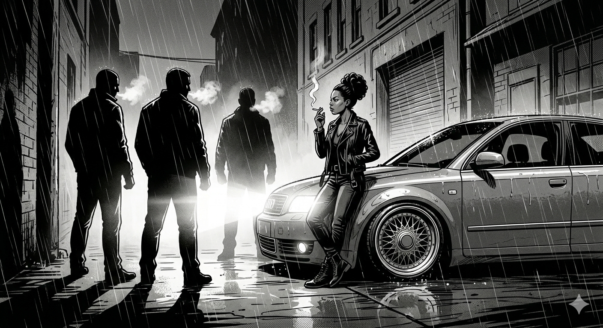
One night, this heavy-set hustler named Marcus blocked the alley right outside The Bricks. He had two of his boys with him, leaning against the graffiti-covered walls while the rain was slicking the stones. I was leaning on the fender of the Audi B6, enjoying a smoke before going On Air. Marcus stepped into the glare of the headlights, fog breathing out of his mouth. "You think you own Station North now, huh?" he sneered, looking at the plates. "You forget where you came from, girl? The corner always collects its debts."
🎧 AUDIO #13
0:00 / 0:00
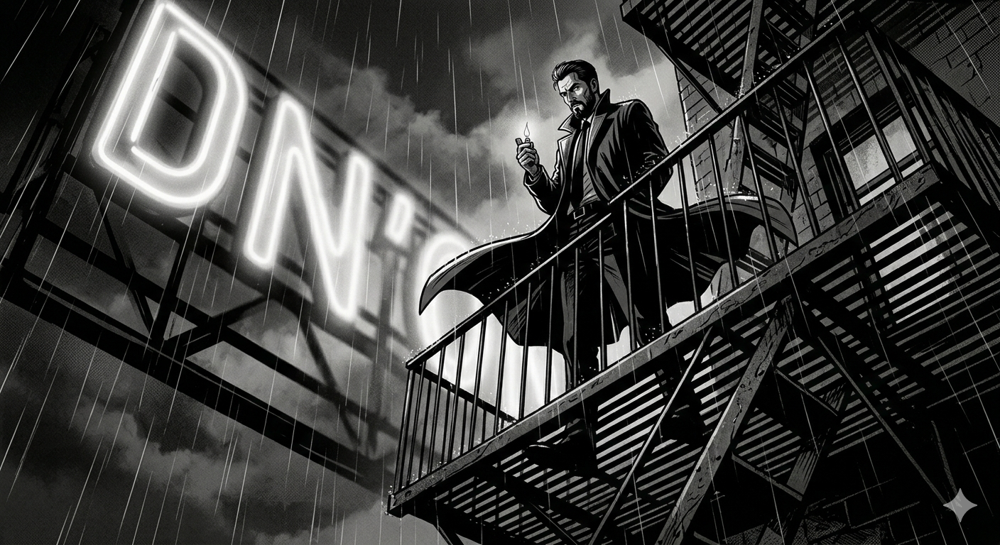
I didn't flinch. I didn't reach for a weapon. I just pointed up. Up to the iron fire escape cutting through the dark. Marcus looked up, and his smile just died. The Boss was standing up there on the metal grating, completely still, his long dark coat blowing in the wind. He had a lighter in one hand, the small flame illuminating his cold, focused eyes. He didn't yell. He didn't threaten. He just looked down at them like they were bugs on his schematic drawings. And behind him, the giant red neon sign of Station North was pulsing against the rain clouds.
🎧 AUDIO #14
0:00 / 0:00
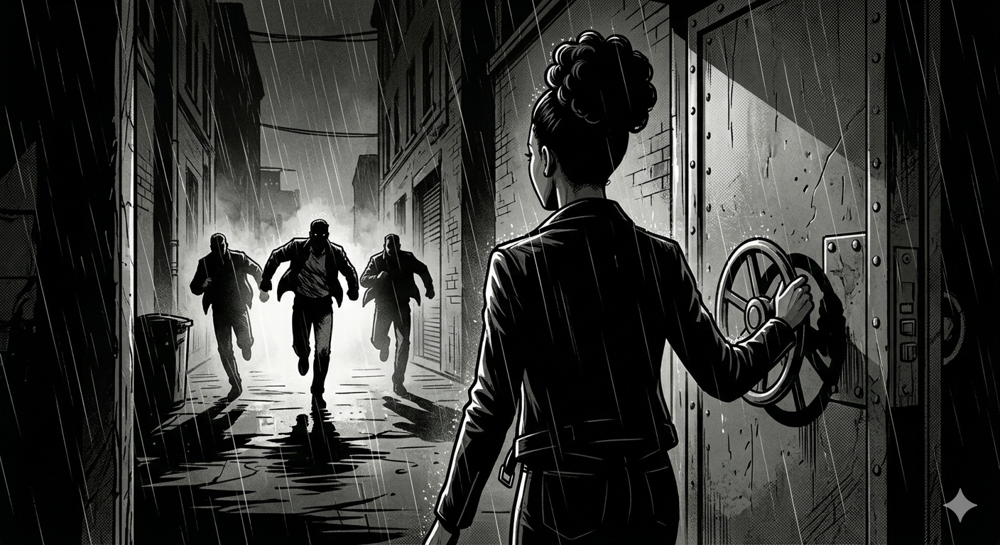
"This ain't just a corner anymore, Marcus," I said, letting the smoke roll past my lips. "The Boss built the grid, and I am the signal. You try to cut the wire, and the whole city comes down on you." Marcus looked at his boys, looked back up at the shadow on the fire escape, and took a step back. They vanished into the dark alley like cockroaches when the light hits. I tossed the cigarette into the puddle, walked past the heavy steel door, and stepped into my booth. It was time to tell the city who really runs these streets.
🎧 AUDIO #15
0:00 / 0:00
Chapter 4: The Sound of the Basement
The cellar of The Bricks was my playground. While the Boss spent his hours upstairs in the main hall—messing with those blinking towers and humming racks that I didn’t pretend to understand—I was down here, diving into the crates.
🎧 AUDIO #16
0:00 / 0:00
It was freezing, that damp industrial cold that eats through your coat, but the room was packed with gear. Reel-to-reel decks, wood-paneled amps, and thousands of records stacked to the ceiling. It was like a museum of noise. I was looking for something that hit just right—something heavy, soulful, with that slow-burn heat I liked to drop on the air when the night got deep.
🎧 AUDIO #17
0:00 / 0:00
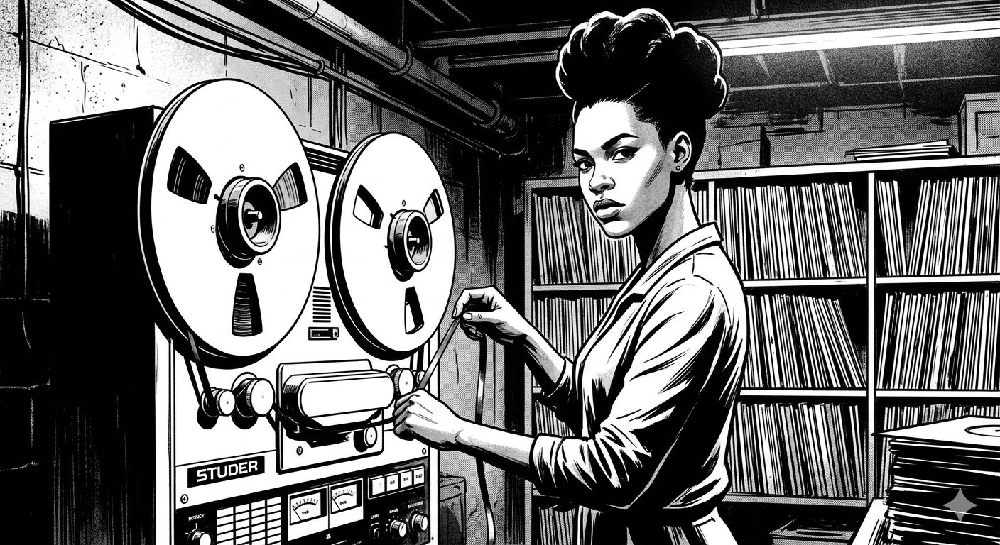
I found a reel tucked behind an old, broken-down mixer. It didn't have a sleeve, just a name scribbled in blue ink: Sister. I pulled it out, threaded the tape through the reels of an old Studer machine, and let it spin.
🎧 AUDIO #18
0:00 / 0:00
The sound that hit the room… it stopped me cold. It wasn't the clean, perfect stuff you hear on the radio. It was thick, fuzzy, and incredibly alive. A woman’s voice—deep, velvet, and dripping with a pain that felt like home. She sang like she was confessing sins she didn't want to get rid of.
🎧 AUDIO #19
0:00 / 0:00
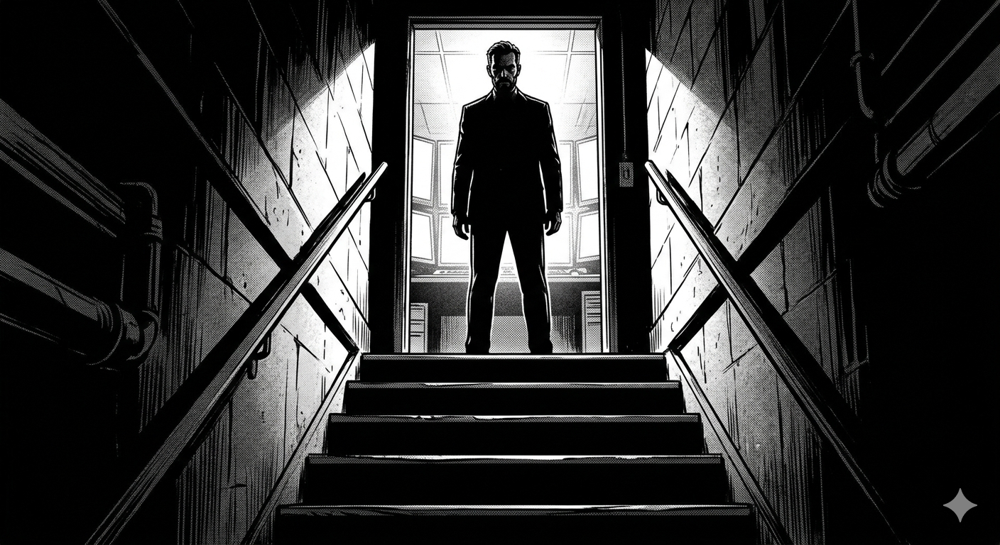
The heavy steel door groaned at the top of the stairs. The Boss was there, silhouetted against the flicker of those glowing screens upstairs. He walked down slowly, his boots crunching on the dusty concrete. He didn't say a word. He just listened to the voice on the tape, and for the first time, his face looked… human. "Who is she?" I asked, keeping my hand on the volume dial, making sure the song didn't dip.
🎧 AUDIO #20
0:00 / 0:00
He didn’t answer right away. He stood there, staring at the spinning tape, looking like he’d been dragged back twenty years. "My sister," he finally said, his voice quiet. "She was the talent. This used to be my parents' factory. When they were gone, and she was gone too… this place became a graveyard."
🎧 AUDIO #21
0:00 / 0:00
I looked around at the walls, the rusted pipes, and the expensive-looking gear he’d brought in to bridge the old world and the new. "So this is why you keep the lights on," I said softly. "You’re not just some guy playing with wires. You’re holding a vigil."
🎧 AUDIO #22
0:00 / 0:00
He looked at me—really looked at me—and his gaze held that weight I’d seen the night he picked me up. "I inherited a shell, so I filled it with everything she loved. I built the machine, but I couldn't provide the soul. I was just running the grid, waiting for the signal to come back."
🎧 AUDIO #23
0:00 / 0:00
He walked over, his eyes scanning the space, then resting on me. "When I picked you up that night, I was just looking for a body. But then I heard you in the booth. The way you play with the sound, the way you make the city lean in and hold its breath… you’ve got the same fire she had. You don’t just play the tracks, you make them feel dangerous."
🎧 AUDIO #24
0:00 / 0:00
I leaned against the workbench, feeling the vibration of the tape through my spine. I knew how to work a room. I knew how to make a man feel like he was the only one in the world, even when a thousand people were listening to my voice through the wire.
🎧 AUDIO #25
0:00 / 0:00
"So, I’m your ghost, Boss?" I teased, letting a slow, suggestive smile pull at my lips. I stepped closer, the air between us suddenly thick enough to cut. "You build the stage, and I keep the fans coming back for more, wondering what I’m going to say next?" He didn't move, just watched me with that cold intensity. "You’re the reason the machine breathes."
🎧 AUDIO #26
0:00 / 0:00
I reached out and hit the fader, turning the song up until the bass shook the floorboards. I wasn't just a girl from the streets anymore. I was the heartbeat of this entire operation. "Well," I whispered, the mic sensitivity dialed up so the whole room could hear the rasp in my throat. "Then let’s make sure they never forget the sound of us."
🎧 AUDIO #27
0:00 / 0:00
Chapter 5: Guerrilla Grid
We didn’t advertise. We seduced. We didn’t wait for Baltimore to find us—we burned ourselves into the city's synapses until no one could tell where reality ended and our signal began.
🎧 AUDIO #28
0:00 / 0:00
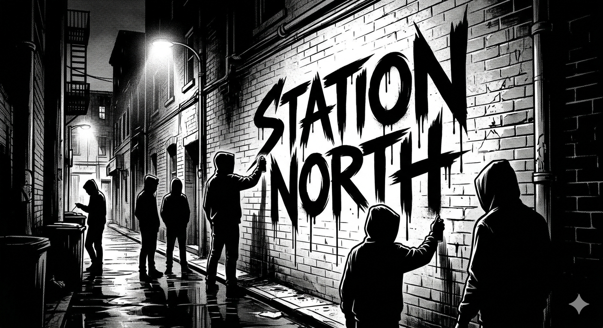
I unleashed my network. Girls who didn’t fear the dark and knew the asphalt like their own skin. We didn’t just slap up stickers; we left promises we never intended to keep. Every lamppost, every street sign, every alleyway where the lost souls gather. We tattooed Baltimore with our code until it was a scar the city wore with pride.
🎧 AUDIO #29
0:00 / 0:00
And those kids spray-painting the factory walls? The Boss didn’t chase them off. He handed them fresh cans and showed them how to mark an empire. This wasn’t vandalism anymore. It was an invasion. Within three weeks, the city was breathing under our skin. We turned the subways into rolling galleries—neon ghosts cutting through the guts of the underground. Everywhere you looked: our logo. Sharp. Uncompromising.
🎧 AUDIO #30
0:00 / 0:00
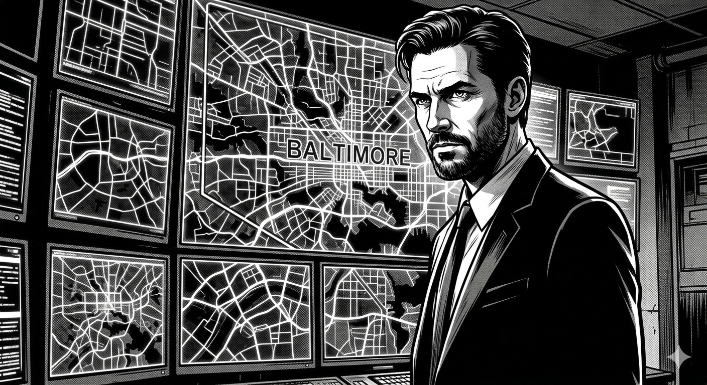
One night, I walked into the control room and found him there. The monitor glow washed over the Boss’s face, mapping the city in webs of red, glowing zones. He didn't look like a businessman anymore. He was an architect of a revolution. I stepped up behind him and rested my hand on his shoulder—a touch that hit that cold room like a gunshot.
🎧 AUDIO #31
0:00 / 0:00
The city was vibrating under our rhythm. There was soul in that logistics, you feel me? We’d taken the heartbeat of the streets and short-circuited it with the cold, perfect sound of the factory. Baltimore didn’t belong to the suits anymore. It belonged to the echo we’d left in every damn dark corner.
🎧 AUDIO #32
0:00 / 0:00
We aren't just a small-time station blinking in a basement anymore. We’re the static you hear when you’re walking the streets alone, and you suddenly realize—damn. You aren't really alone after all.
🎧 AUDIO #33
0:00 / 0:00
CHAPTER 6: THE OVERCLOCK (POV: The Queen)
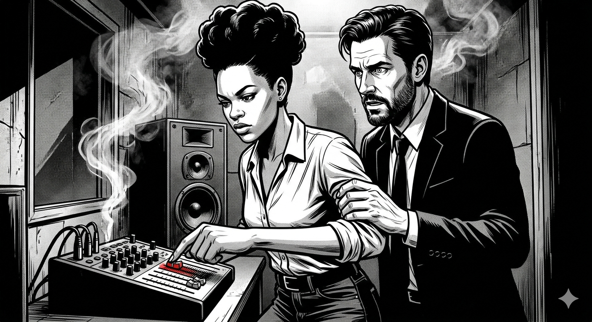
I watch him through the glass. He’s sitting there, shoulders rigid, fingers dancing over the keyboard like he’s trying to command the world with lines of code. But he doesn’t know I’ve got my hand on the fader. I see him staring at his cigarette, the smoke curling in blue ribbons before his face, and I can feel it: he’s nervous. The Boss is nervous because he knows I’m pushing the bass into the red.
🎧 AUDIO #34
0:00 / 0:00
I step into the booth. The air in here is heavy, almost sticky. It’s a collision—the static chill of his server racks fighting against the heavy, sweet scent of my perfume, which I’ve draped over his entire operation like an invisible net. When I move, I displace the stale smoke he left behind, replacing it with my essence. I want him to smell me before he even sees me.
🎧 AUDIO #35
0:00 / 0:00
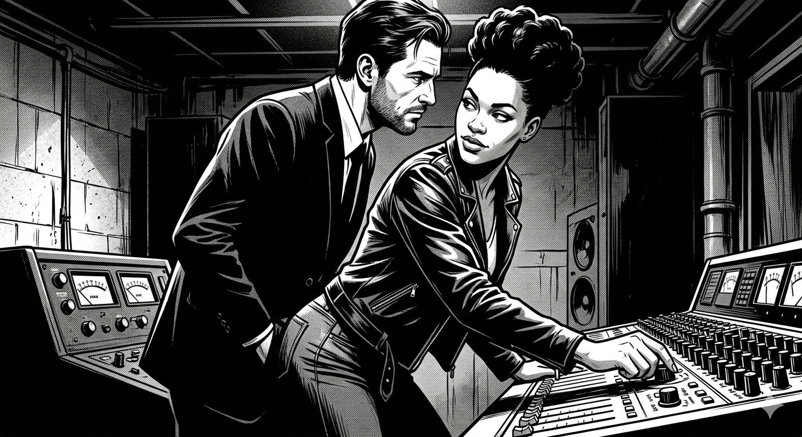
I watch him stand up. He moves with a heaviness, as if he’s fighting against the pressure of my rhythm. When he enters the booth, he brings that cool, European distance with him, but it’s fracturing. I smell the cheap tobacco on his clothes—that dry, bitter scent of solitude that I’m currently suffocating with my fragrance.
🎧 AUDIO #36
0:00 / 0:00
"You’re pushing the line into the red," I breathe into the mic. I lock eyes with him, slowly, deliberately pushing the fader to the top. I see his pupils dilate. He doesn’t say anything; he doesn’t have to. I’m putting the words in his mouth before he even thinks them. He steps so close I can feel the chill of his suit against my skin, a sharp contrast to the heat I’m igniting in his pulse.
🎧 AUDIO #37
0:00 / 0:00
He growls something about "overclocking" and "system failure," but his voice is raw, trembling. He’s not an architect anymore; he’s just a man realizing his own foundations are collapsing. I place my hand on his forearm. I feel him hold his breath under my grip. That’s the crackle I’m talking about—that electrical charge that discharges when the old man’s analog soul meets the street-level fire of my voice.
🎧 AUDIO #38
0:00 / 0:00
"Maybe everything needs to burn, Boss," I whisper, and I watch his analytical gaze lose itself in mine. He isn’t here to save the station anymore. He’s here to lose.
🎧 AUDIO #39
0:00 / 0:00
I lean forward, my lips only millimeters from the cold steel of the mic. I want everyone in Baltimore—from the gridlocked traffic to the lonely souls in the dark—to hear how he breathes. I want them to feel the static that builds when the Queen drives her machine into the ground. I’m not just a voice on the radio anymore; I’m the reason he ain't sleepin’ a wink tonight.
🎧 AUDIO #40
0:00 / 0:00
Chapter 6.5: Expansion and the Homecoming
In the weeks after that overclock, we were hittin’ a rhythm that felt like magic. The Bricks were pulse-heavy, the project was blowin’ up, and we found this flow that blurred the line between his cold, tech-obsessed world and my asphalt reality. We weren't just talkin’ streams anymore; we were mapping out how to turn Station North into a powerhouse.
🎧 AUDIO #41
0:00 / 0:00
He’d talk my ear off about his home turf back in Europe—how the autobahns were wide open, begging for a car to be pushed to the limit, and about the fleet he had tucked away back there. “That’s where the real capacity for our expansion is, Queen,” he’d tell me late at night, his eyes lit up as we dialed in the last of the code. He was talkin’ about goin’ over, setting up shop, and building the logistics for the next level.
🎧 AUDIO #42
0:00 / 0:00
The goodbye was quick, almost like it was nothin’. He barely packed a bag, totally convinced he’d be back in a week with the blueprint for the big move. We said our peace, hyped up on the dream of what we were building together. He was just headin’ back to handle business, tear up the autobahn, and lock down the bridges for Station North in Europe. We didn't have a clue that he was walkin’ straight into a storm that would keep him pinned down, or that everything we built was about to go silent. For us, it was just the first move in a global game.
🎧 AUDIO #43
0:00 / 0:00
Chapter 7: The Cold Withdrawal
„I’d gotten used to the hum of the Bricks. In those first few weeks after he left, the station was my anchor. He was over in Europe, sure, but the system kept running. I hosted, I spun the tracks, I was the voice of Station North. I figured that was our deal. I do the gig, he handles the rest.
🎧 AUDIO #44
0:00 / 0:00
But the silence between us grew wider with every passing day. No ping, no update, no short signal. I’d sit in the booth at night, the monitor lights painting my face blue, and I’d ask myself: 'Where you at, Boss?' I even started talking to him while the mic was cut. Just to fill the room.
🎧 AUDIO #45
0:00 / 0:00
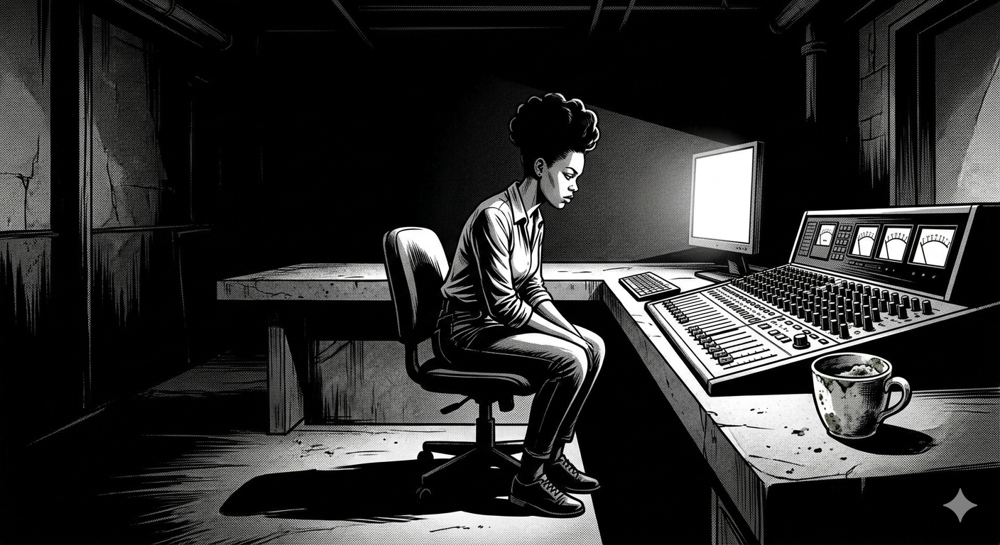
I felt like some cat someone forgot inside the house. I didn't touch his stuff; his coffee cup sat on the mixing console for three days straight until it started to mold. That was all I had left of him.
🎧 AUDIO #46
0:00 / 0:00
I wasn't the Queen controlling the city anymore. I was just a woman waiting for the signal to come back. And then, when I least expected it, it hit me like ice.“
🎧 AUDIO #47
0:00 / 0:00
Chapter 8: The Tinny Call
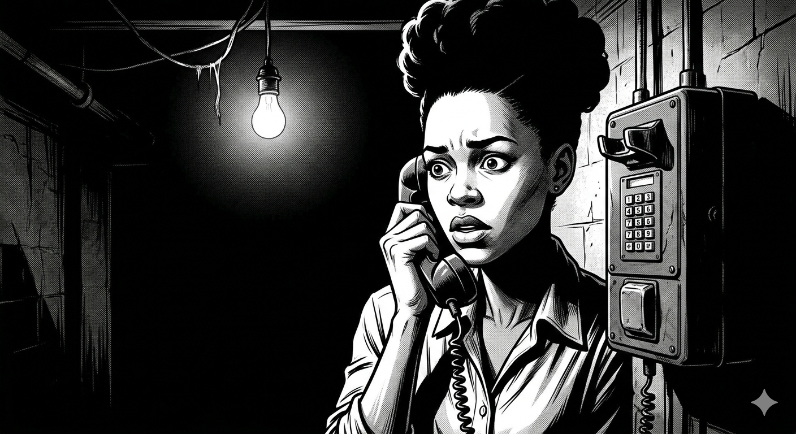
„It was the middle of the night. The factory was pitch black, only the servers blinking away like a steady heartbeat. When the emergency phone in the basement started ringing, I damn near jumped out of my skin. He never uses that thing.
🎧 AUDIO #48
0:00 / 0:00
I ran down the stairs, my heart already hammering against my ribs. When I picked up the receiver, all I heard at first was this static. No familiar sounds from the factory, no background I knew. Just this sterile, cold silence. 'Station North,' I said. My voice was shaky.
🎧 AUDIO #49
0:00 / 0:00

Then came him. His voice sounded so far away, like he was standing on the other side of the universe. He didn't ask how I was doing. He didn't say he missed me. He just babbled this technocratic bullshit. Something about licenses, blocked assets, Europe. He sounded like a system right on the verge of a total crash. 'You gotta sell my collections,' he said.
🎧 AUDIO #50
0:00 / 0:00
I let out a short laugh, so dry it hurt my throat. 'Are you fucking kidding me? This is our shop, our whole life, Boss!' He didn't argue. He just repeated: 'You gotta sell my collections.' He gave me a rough list—vinyls, old amplifiers, and so on... And then the line went dead.
🎧 AUDIO #51
0:00 / 0:00
I stood there in the dark. He’d pulled the rug right out from under my feet. He knew I didn't know jack shit about his tech, but he also knew I’d find a way to scrape up the cash for him. I felt so damn helpless. And I hated myself because I knew I was gonna do it.“
🎧 AUDIO #52
0:00 / 0:00
Chapter 9: The Sellout (The Ghosts of South Avenue)
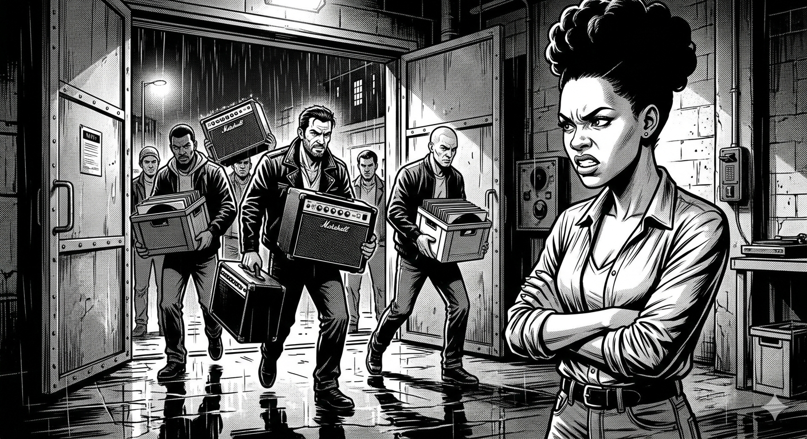
„The next day, they were standing at the door. Rico and his crew. The boys from South Avenue I hadn't seen in years. When Rico walked into the factory, he looked around like he was making fun of all that old high-end equipment. 'Hey, Queen,' he grinned, running a finger over an amplifier. 'You really wanna sell all this? This gear is his everything, ain't it?'
🎧 AUDIO #53
0:00 / 0:00
I wanted to smash his face in. 'Shut your mouth and start carrying, Rico. Almost everything without a cord goes into the truck. The rest stays right here!' He just shrugged. He knew damn well I was cornered. I watched them pack the turntables, the amps, and all that vintage gear into crates. It was a museum for our sound. And I bartered it away.
🎧 AUDIO #54
0:00 / 0:00
I felt like a traitor. Every time Rico tossed an amp into the truck like it was cheap garbage, it tore me up inside. But I kept my mouth shut. I had to push through. For him.“
🎧 AUDIO #55
0:00 / 0:00
Chapter 10: The Inventory of Despair
„I’d just chased Rico and his people out of the factory, the last crates disappearing into their truck. The concrete floor looked bare now, like a wound that refused to heal. I sat in the booth, counting the cash they’d shoved into my hand. It was a joke. A bad joke. The phone buzzed again. This time it wasn't a shock; it was pure poison. 'Station North,' I said. This time without a single tremor.
🎧 AUDIO #56
0:00 / 0:00
The voice on the other end wasn't his anymore. It was one of those officials—cold, emotionless, with an accent that tasted like a European courtroom. He gave me the number. Black and white. An amount so damn high it made my head spin just listening to it. 'You have twenty-four hours to transfer the rest, or the bail is forfeited and the defendant goes into pre-trial detention,' he said.
🎧 AUDIO #57
0:00 / 0:00
I hung up without saying a word. I stood there, hands pressed against the mixer until my knuckles turned white. The money from Rico was maybe half of what I needed. The factory was cleaned out; whatever was left you could only trade for a couple of bucks.
🎧 AUDIO #58
0:00 / 0:00
I looked into the mirror hanging in the corner of the booth. I looked like the Queen of Baltimore, but inside, I was that little girl again, the one who used to hide out on North Avenue years ago. I placed my hand against my neck, feeling the clasp of my mother’s gold chain. I knew exactly what I had to do right then. That wasn't just gear anymore; that was the last thing I had left. And if that ain't enough... then the signal is dead for good.“
🎧 AUDIO #59
0:00 / 0:00
Chapter 11: The Last Price
„The walk to the downtown pawn shop felt like a long, dark tunnel. The city outside was loud, the neon lights reflecting in the puddles, but I didn't register any of it. All I felt was that small piece of metal in my hand. My mother's heirloom. A piece of my soul that I now had to carry into this greasy joint.
🎧 AUDIO #60
0:00 / 0:00
The shop owner, one of those guys with a face that looked like forgotten promises, only held the chain under his loupe for a second. He didn't ask where I got it. He knew you don't sell a piece like that unless you run out of options. 'This is gold, kiddo, but you know how the game goes,' he muttered, wiping the counter with his dirty sleeve. 'Market value is one thing, but what I can give you... that’s a whole different ballgame.'
🎧 AUDIO #61
0:00 / 0:00
I looked at him. I gave him that look I’d learned back when I was surviving on the streets. The look that makes people tuck their heads in rather than talk back. 'Listen to me, you piece of shit,' I said, my voice low. 'I don't need a pity lecture. I need the cash that makes the numbers on my screen match the total. Now.'
🎧 AUDIO #62
0:00 / 0:00
He laid the cash on the table. That was it. My last piece of dignity for a stack of bills that I’d transfer straight into that European cell.
🎧 AUDIO #63
0:00 / 0:00
When I got back outside, the sky was pitch black. I went back to the factory, sat in front of the monitor, and punched in the numbers. Every digit felt like I was erasing a part of myself. 'Transfer successful.' That's what it said.
🎧 AUDIO #64
0:00 / 0:00
I collapsed onto the floor. No sound left in the room except the buzzing in my own head. I’d sold out my whole life to get him out of that hole in Europe. And now? Now I was sitting here, the factory empty, my neck bare, and I felt like I’d never been anything more than a cheap number in a broken system. I stared at the screen, hoping he’d check in. Hoping he’d say: 'I'm free, Queen. I'm coming home.' But the only thing that answered was the silence.“
🎧 AUDIO #65
0:00 / 0:00
Chapter 12: The Invisible Passage
„Weeks went by after that last, jagged phone call. Not days, not hours—it felt like a damn eternity where time just stood lead-grey in the room. He was out there somewhere, moving in the dark, a shadow on the European mainland. And I was sitting here in Baltimore, having to pretend the world was still on beat.
🎧 AUDIO #66
0:00 / 0:00
I tried to keep the station running. I went into the booth every night, pulled up the mic, and did my shows. But without him... without his brain behind the scenes, the revenue crashed like rotten wood. I had no bank connections, no access to the ad deals, no nothing. He’d built the system so he was the only key. Without him, I was just a voice screaming into a void.
🎧 AUDIO #67
0:00 / 0:00
The phone in the factory didn't stop ringing, though. But it wasn't him. It was guys wanting money. Business partners, ad reps, bureaucrats, all asking that same damn question: 'Where's the boss?' I had to lie, every single day. I had to spin them stories about important business trips and server migrations while my stomach was growling from hunger.
🎧 AUDIO #68
0:00 / 0:00
I’d sit on the bare concrete at night, staring at my empty hands, and the thoughts started creeping in. Where do I get the cash? The bills were piling up. For a brief, dirty second, that one thought crossed my mind. The street. North Avenue. I knew exactly how to track down enough cash within an hour to survive the next few weeks. It would’ve been so easy. Back into the old rhythm. Back on the asphalt. But something in me... something fought back with everything it had.
🎧 AUDIO #69
0:00 / 0:00
I looked into the mirror in the booth, saw my face in the dim light of the remaining monitors. I’d sold my mother's chain; I’d bartered away his beloved collection. If I went back to the streets now, I’d be betraying everything we’d built here in those basement nights. I was the Queen of Station North. I wasn't turning tricks anymore. I’d rather starve in this factory than give up that damn pride he’d given me.
🎧 AUDIO #70
0:00 / 0:00
I didn't give up hope. Every night when I pushed that fader up, I told myself: 'You're still on your way, Boss. And I’ll hold down the fort until the frequency brings you back home.'
🎧 AUDIO #71
0:00 / 0:00
He was out of that cell, but he was stuck. No passport, no papers, right in the middle of Europe. They weren't even watching him with handcuffs or guards outside his door—the system over there runs subtler. When you're out on bail, they just take your identity and tell you you can't leave the country. But what those bureaucrats don't know: Europe ain't like the States. When you wanna go from Germany over to Holland, there are no fat walls or border checkpoints where some guy frisks you. You just cross the invisible line. If you know how.
🎧 AUDIO #72
0:00 / 0:00
And that's exactly where Rico came back into play. I had to call him again. There was no other way. He was sitting in his fat ride over on South Avenue, smoking those stinking cigars, and he just laughed dirtily at first when I told him what we were planning.
🎧 AUDIO #73
0:00 / 0:00
You crazy, Queen,' he mumbled through the receiver. 'The guy can't leave the country and you want me to stir up my boys in the ports of Rotterdam and Antwerp? Those guys don't move a finger for free.'
🎧 AUDIO #74
0:00 / 0:00
I took a deep breath. I had to promise him the moon. Stories about the grand future of the station, shares of the ad revenue, money we basically didn't even have anymore. I made promises that I knew right then we’d probably never be able to keep. But you don't survive on the streets by being honest. You survive by using other people's dreams as currency.
🎧 AUDIO #75
0:00 / 0:00
'Tell your people over there they’ll get their cut,' I told Rico, and my voice sounded so damn steady I almost believed it myself. 'They just gotta slip him past the docking stations. Onto a ship. Any ship crossing the Atlantic heading for Baltimore. He’ll vanish from his hotel in the dead of night, make his way across the border to Holland, and wait at the port. Just make sure your old pimp friends over there keep their eyes open.'
🎧 AUDIO #76
0:00 / 0:00
Rico went quiet for a long moment. All you could hear was his breathing. 'Alright, Queen,' he finally said. 'I’ll light up the wires. But if this blows up... you ain't the Queen of Station North no more. You're prey.'
🎧 AUDIO #77
0:00 / 0:00
When he hung up, the factory got a little colder. So he was on the move. On foot, covered by darkness, walking across a border you can't even see, heading for a port that smells like salt and danger. And me? I sat here in Baltimore, my neck still cold from selling that chain, unable to do a damn thing but wait and see if that underground corridor would actually bring him back to me.“
🎧 AUDIO #78
0:00 / 0:00
Chapter 13: The Miracle in the Bass
„It was a brutal winter in the Bricks. When the wind blows from the harbor through the cracks in the old masonry, a proud name doesn't do you any good. The station was running, but I was broke. And when I say broke, I mean: the fridge was empty, my stomach was growling, and you could see your own breath inside the factory.
🎧 AUDIO #79
0:00 / 0:00
Thank God the power for the servers was still on, but the heating was dead as a doornail. Rico had brought me this rattling electric space heater he’d ripped off somewhere. The thing smelled like a burnt cable drum, but I’d squat in front of it at night, pressing my hands against the glowing grid, just hoping the night would pass quickly.
🎧 AUDIO #80
0:00 / 0:00
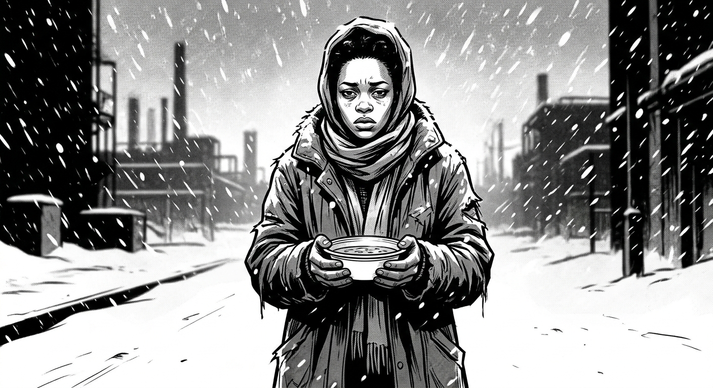
To keep from starving, I had to hide my face. Every afternoon, I’d hop on the tram, ride across the city to a completely different district where nobody knew me. The Queen of Station North, wrapped in a thick, tattered jacket, standing in line at the soup kitchen for a warm bowl and a piece of dry bread. Every time I brought that spoon to my mouth, I swore to myself: this is the last time. But the next day, I was back on the tram. Because hunger screams louder than pride.
🎧 AUDIO #81
0:00 / 0:00
Then, this one evening, I came back. The snow was slushing on the streets, my shoes soaked through. I walked the dark path up to the factory, ready to sit back down in that freezing booth and start my show, just to distract my head. But as I turned the corner, my heart damn near stopped.
🎧 AUDIO #82
0:00 / 0:00
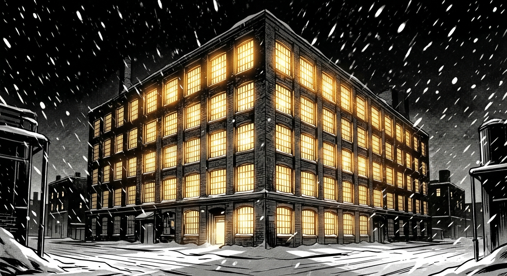
The whole fucking brick factory was lit up. Every single window that was usually black and dead was radiating this warm, golden light. My first thought was the feds. Or Rico’s boys coming for the rest. But as I got closer to the heavy wooden gate, I felt it. The ground was vibrating. A thick, fat, analog R&B beat was thumping through the heavy walls—a sound so deep and warm it melted the damn slush right under my feet. The system wasn't just running; it was alive.
🎧 AUDIO #83
0:00 / 0:00
I pushed the heavy latch down, the door swung open. And in that exact second, it hit me like a tidal wave. No smell of dust, no stench from that cheap space heater. There was this heavy, crisp scent of expensive perfume. And the sweet, familiar smoke of a cigarette.
🎧 AUDIO #84
0:00 / 0:00
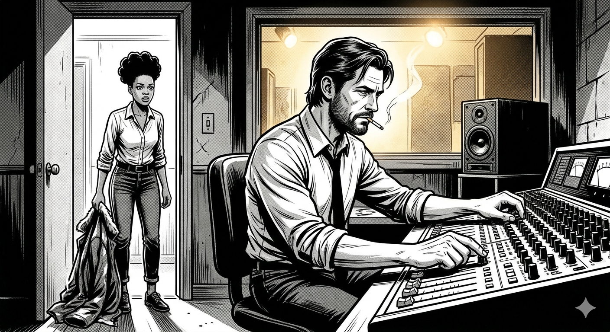
I walked up the steps to the studio, the cold completely wiped out because the heating pipes in the basement were hammering like crazy again. I threw open the door to the booth. The spotlights over the mixing console were on, the meters pinning into the red. And there he sat.
🎧 AUDIO #85
0:00 / 0:00
He’d traded the sharp European suit for a dark jacket, his hair a little longer than usual, his face marked by weeks on cargo ships and illegal routes across the Atlantic. He held the cigarette between his fingers, didn't even look up when I walked in, but just slowly turned one of those fat knobs to drive the bass even deeper into the concrete.
🎧 AUDIO #86
0:00 / 0:00
He didn't look at me, but he knew exactly Born I was standing there. 'You held down the fort, Queen,' he said, and his voice was just as calm and cold as the day he took me off the street. 'Now let’s dial the frequency back up.'
🎧 AUDIO #87
0:00 / 0:00
I just stood there. My brain completely shut down right then. I had no idea what the hell was going on. The power was back at full capacity, the heat blasting through the old pipes like he’d never been gone. And the bass... God, that bass. It hit so deep in the concrete that my entire body vibrated. Everything was exactly like he’d never left. Like the cell in Europe, Rico, the pawn shop, and the hunger were just a bad dream.
🎧 AUDIO #88
0:00 / 0:00
I looked at him. His fingers rested calmly on the mixer housing. He looked like the absolute ruler of those machines, no word about the escape, no word about the ships or how he’d managed to bring the station back to life. And me? I didn't dare ask. On the streets, you learn one thing: when a miracle is standing right in front of you, you don't mess up the parade with questions. You just take it.
🎧 AUDIO #89
0:00 / 0:00
I let my soaked jacket drop to the floor. My neck was bare, my mother’s chain was gone, but as I pulled up the chair, I felt like the Queen again for the first time in weeks.
🎧 AUDIO #90
0:00 / 0:00
I sat down at the microphone. He still didn't look up, but he slid the master fader up to the millimeter and gave me the cue. The red light snapped on: ON AIR.
🎧 AUDIO #91
0:00 / 0:00
I took a deep breath, sucked the beat into my lungs, and opened the fader. And then I started the best show Station North had ever seen. My voice wasn't just the voice of that girl from North Avenue anymore. It was the voice of a woman who had burned her own world to ashes just to buy this exact moment. Baltimore didn't just hear music that night. They heard that the Boss was back home and the Queen had her crown back.
🎧 AUDIO #92
0:00 / 0:00
I flipped the fader back down. The red light died, and the booth sank back into that familiar, warm twilight. The beat kept pulsing in the background, lower now, like a quiet heartbeat. I was completely wiped, sweat on my forehead, but for the first time in months, there was absolute clarity in my head.
🎧 AUDIO #93
0:00 / 0:00
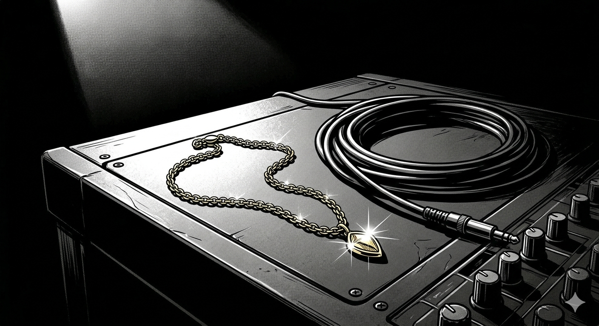
I was just about to stand up, just to look at him, when my eyes caught the small console next to my headphone jack. A spot I usually never look at. I didn't notice it immediately. My brain was still way too wired from the show. But something was lying there. A tiny, golden glint in the dim light of the monitor. I caught my breath. My hand shook as I reached for it.
🎧 AUDIO #94
0:00 / 0:00
It was the chain. My mother's gold chain. It was lying right there, neatly coiled up, like it had never left. Every single link was clean, the clasp intact. The exact same pendant I’d slammed onto the counter in that dirty pawn shop to buy his freedom.
🎧 AUDIO #95
0:00 / 0:00
I stared at the gold in my palm, and suddenly the chill of downtown shot right back into my bones—but this time it was different. I didn't comprehend it. I didn't know how he’d pulled it off. He’d barely been in this factory for an hour, he came across the Atlantic without papers, and yet the very first thing he did was track down that abrufuckte shop to buy my backbone back for me.
🎧 AUDIO #96
0:00 / 0:00
I slowly looked over at him. He was still sitting there, the cigarette almost burnt down, eyes locked onto the audio meters. He didn't say a word. He didn't grin proudly, he didn't offer an explanation. He just mixed in the next track.
🎧 AUDIO #97
0:00 / 0:00
And in that moment, I knew: the Boss wasn't just back. He’d taken control of the system before I even knew he was breathing. I put the chain around my neck, felt the cold metal hit my skin, and knew that from this day on, nobody was ever gonna shut us down. You’re locked into Station North, baby.“
🎧 AUDIO #98
0:00 / 0:00